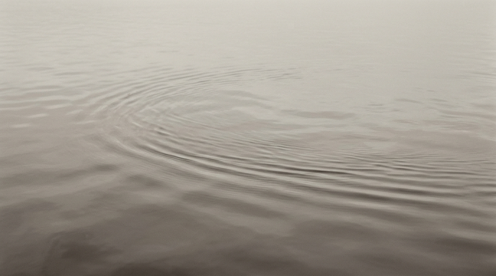

Mezame
意識の焦点が「思考される内容」から「思考を観測する背景」へとシフトすること。それが目覚めである。
何が意識されているかではない。意識されている内容が生成され、消滅していく「空間」そのものとしての気づきに目覚める。
現実に抵抗するのをやめたとき、ただ「今ここにある」という存在の喜びが姿を現す。

思考は勝手に流れる。あなたはそれを映画の観客のように、静かに見つめる目である。
私たちは夢の中で生きている。それに気づいた瞬間から、夢が崩壊し、目覚めが始まる。